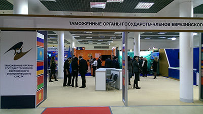
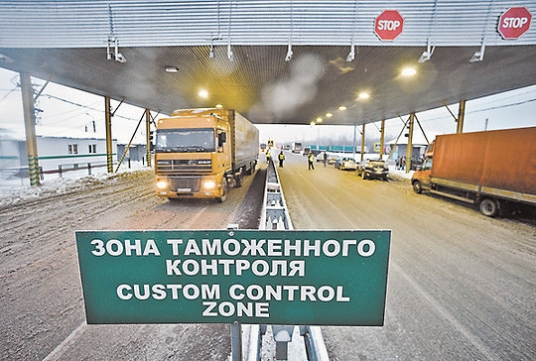

Институт уполномоченного экономического оператора является нововведением в таможенную практику государств - участников Евразийского экономического союза и является важным шагом к развитию системы взаимодействия таможенной службы с участниками внешнеэкономической деятельности.
С введением Таможенного кодекса Таможенного союза институт участников внешнеэкономической деятельности пополнился новым лицом – уполномоченным экономическим оператором. Целями нововведения являются: развитие полноценной системы взаимодействия таможенной службы и участников внешнеэкономической деятельности, упрощение и ускорение таможенных процедур, ослабление административного давления.
В соответствии со статьей 18 Таможенного кодекса Таможенного союза (далее - ТК ТС) уполномоченным экономическими оператором является юридическое лицо, отвечающее установленным требованиям и пользующееся специальными упрощениями в соответствии с таможенным законодательством Таможенного союза.Уполномоченный экономический оператор в Евразийском экономическом союзе (далее ЕАЭС) – это юридическое лицо, которое должно отвечать определенному перечню наднациональных требований и соблюдать общие условия, а также отвечать дополнительным требованиям и соблюдать дополнительные условия, которые могут быть установлены в стране ЕАЭС, в соответствии с законодательством которой уполномоченный экономический оператор создан как юридическое лицо.
При условии выполнения всех требований и соблюдения всех условий, а также включении в соответствующий реестр юридическое лицо приобретает статус уполномоченного экономического оператора и может пользоваться специальными упрощениями, предусмотренными в ТК ТС.Территория действия белорусского юридического лица как уполномоченного экономического оператора ограничивается территорией Республики Беларусь, это означает, что статус уполномоченного экономического оператора признается только на территории того государства, которое присвоило данный статус.
Государственный таможенный комитет Республики Беларусь (далее ГТК РБ) ведет реестр уполномоченных экономических операторов Республики Беларусь. На основании национальных реестров, Евразийская экономическая комиссия формирует общий реестр уполномоченных экономических операторов, который публикует на своем официальном сайте один раз в квартал.
Правовое регулирование института уполномоченного экономического оператора осуществляется на двух уровнях. В ТК ТС закреплены основные обязательные положения. На национальном уровне институт уполномоченного экономического оператора в Республике Беларусь регулируется Законом Республики Беларусь «О таможенном регулировании в Республике Беларусь» от 10 января 2014 года № 129-З.
В Таможенном союзе деятельность уполномоченного экономического оператора регулируется статьями 38 - 41 ТК ТС, а в Республике Беларусь – главой 6 Закона Республики Беларусь «О таможенном регулировании в Республике Беларусь» от 10 января 2014 года № 129-З. В соответствии со статьей 38 ТК ТС уполномоченный экономический оператор – это юридическое лицо, отвечающее условиям, указанным в статье 39 ТК ТС, которое вправе пользоваться специальными упрощениями, предусмотренными статьей 41 ТК ТС.
Часть полномочий по правовому регулированию института уполномоченного экономического оператора передана на национальный уровень. Как было сказано ранее, в законодательствах стран-участниц ЕАЭС имеются некоторые различия в требованиях, предъявляемых к уполномоченному экономическому оператору, а также в его правомочиях.
Введение института уполномоченного экономического оператора затрагивает два существенных аспекта:
При детальном рассмотрении роли статуса уполномоченных экономических операторов на единой таможенной территории необходимо учитывать оба эти аспекта.
Выделим следующие основные цели введения института уполномоченного экономического оператора на таможенной территории ЕАЭС:
- обеспечение безопасности международных цепей поставок государств - участников ЕАЭС в рамках реализованной системы управления рисками;
- соответствие Рамочным стандартам безопасности и облегчения мировой торговли, принятым Всемирной таможенной организацией (июнь 2005 года);
- содействие повышению эффективности внешнеэкономической деятельности предпринимательских структур (например, сокращение сроков доставки, сокращение затрат).
Статус уполномоченного экономического оператора присваивается юридическому лицу таможенными органами путем выдачи свидетельства о включении в реестр уполномоченных экономических операторов и признается на территории того государства, таможенным органом которого присвоен данный статус. Статус уполномоченного экономического оператора присваивается юридическому лицу, созданному в соответствии с законодательством государства - члена ЕАЭС, на территории которого этому лицу будет присвоен этот статус.
Таким образом, институт уполномоченного экономического оператора был введен для удобства деятельности самих участников внешнеэкономической деятельности, сокращения временных и финансовых издержек при пересечении товарами и транспортными средствами таможенной границы, перемещению товаров и транспортных средств по Единой таможенной территории ЕАЭС, вовлечению товаров в экономический оборот Единого экономического пространства в рамках ЕАЭС. Все это создает экономический эффект, связанный с упрощением условий реализации внешнеэкономической деятельности, появлением новых конкурентных преимуществ для субъектов национального рынка, оказывающим прямое влияние на ускорение развития торгово-промышленного потенциала, укрепления экономики Республики Беларусь.